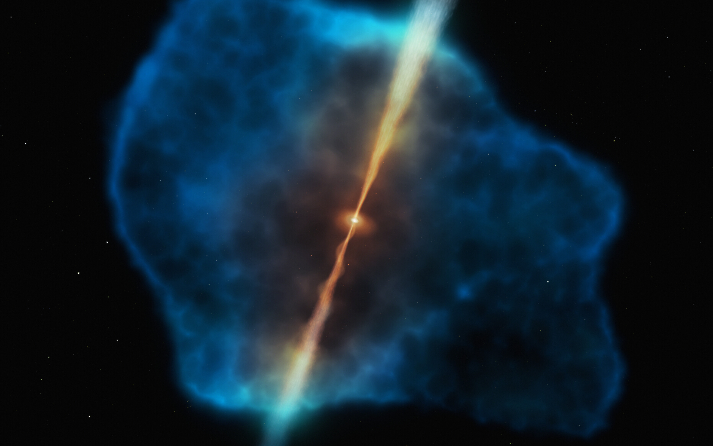

The REQUIEM Survey
Quasars at z∼6 are among the brightest sources in the Universe. The mass of their central black holes grows by 20 times in only 100 Myr via gas accretion and their host galaxies form stars with hundreds of solar masses per year. How can these extreme sources sustain such a rapid gas consumption? An answer to this question may come from our ongoing VLT/MUSE effort targeting z>5.7 quasars: Reionization Epoch QUasar InvEstigation with MUSE (REQUIEM) survey.
Evolution of the gas temperature in a 1012.5M☉ dark matter halo hosting a quasar at z∼6 (courtesy of Dr. Tiago Costa).
The main goal of the REQUIEM survey is to probe the complex interplay between the first quasars and their surroundings. The early formation of super-massive black holes requires this object to be continuously feeded by pristine gas from the inter-galactic medium. Simulations suggest that this “fuel transfer” happens via cool (T∼104K) accretion streams able to survive the violent shocks induced by the first phases of quasar ignition. With our VLT/MUSE iniziative we will trace this gas through its Hydrogen Lyα emission line.
Lyα Halos
Direct observations of the gas located in the close environs of massive galaxies is a necessary piece of information for our understanding of their formation and evolution. These gas reservoirs are mostly composed by neutral hydrogen and would be themselves too faint to be detected. However, the presence of a bright quasar means that they are flooded and ionized by an intense radiation field. The recombination of hydrogen atoms then ignites vigorous Lyα emission, such that the cloud becomes visible as a Lyα nebula. The mechanism for this emission is much similar to our fluorescent lamps, with the difference that the emission is not induced by running electricity but powered by radiation from an accreting supermassive black hole (see artistic impression below).

Credit: ESO/M. Kornmesser. For further details see our ESO press release.